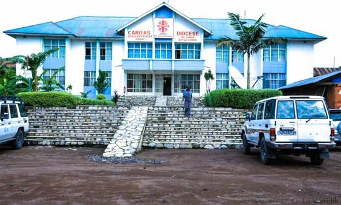
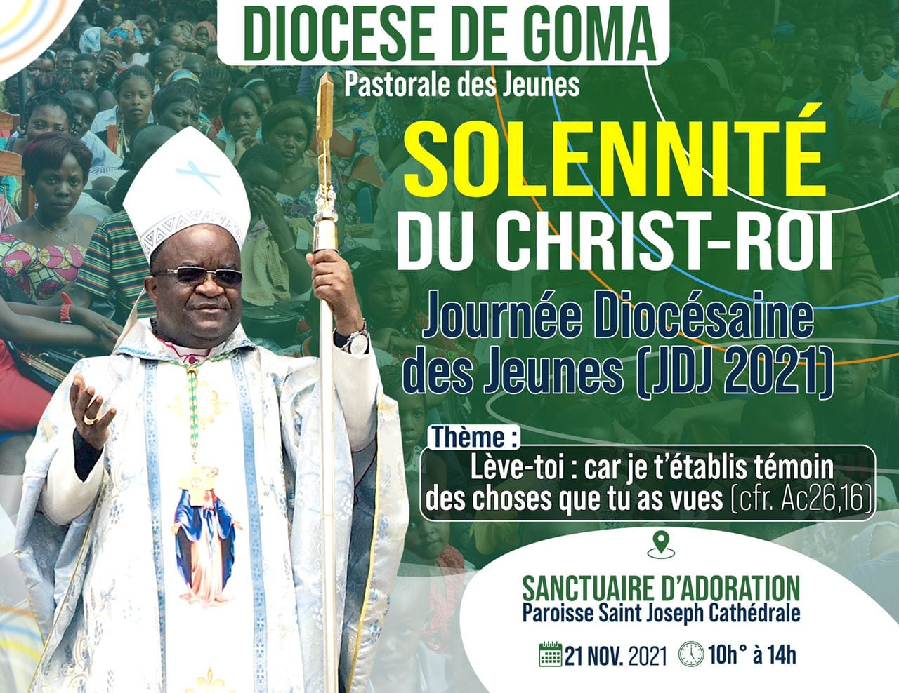

Historique
En 1894, l'explorateur Gustav Adolf von Götzen suivait les traces d'un missionnaire
en provenance de la côte orientale d'Afrique. Pendant qu'il se rendait au Rwanda,
il découvre un petit village de pécheurs appelés Ngoma qui signifie tam tam en swahili,
par déformation il écrivit Goma

Le vicariat apostolique de Goma a été créée le 30 juin 1959;
il devient diocèse de Goma dès le 10 novembre suivant.
Le diocèse compte actuellement 28 paroisses.
